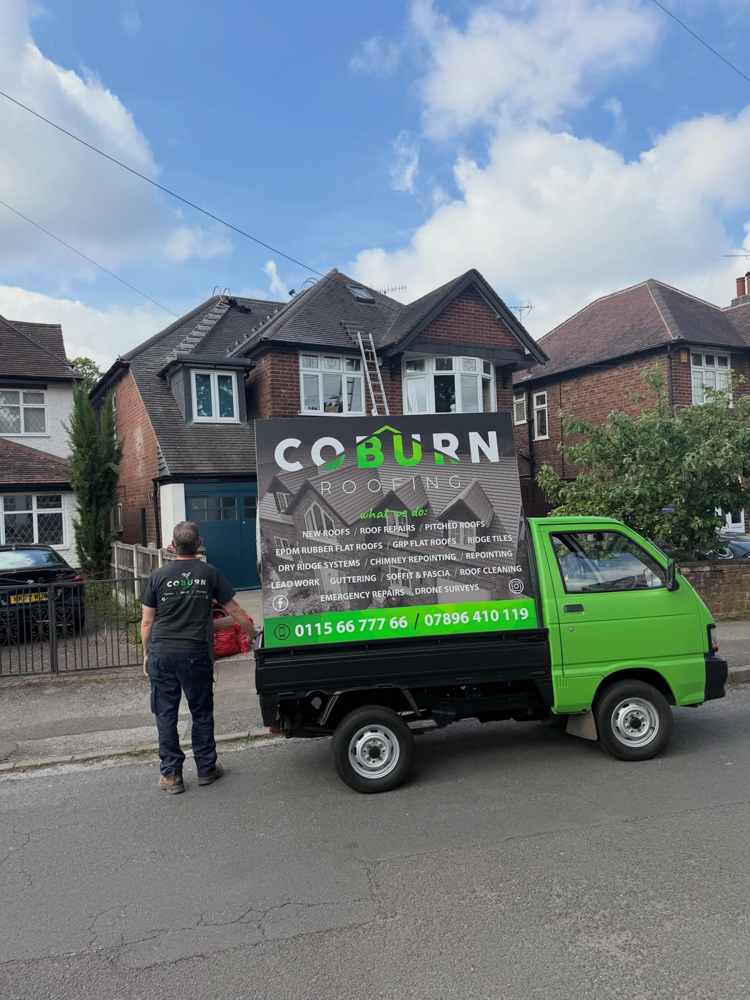
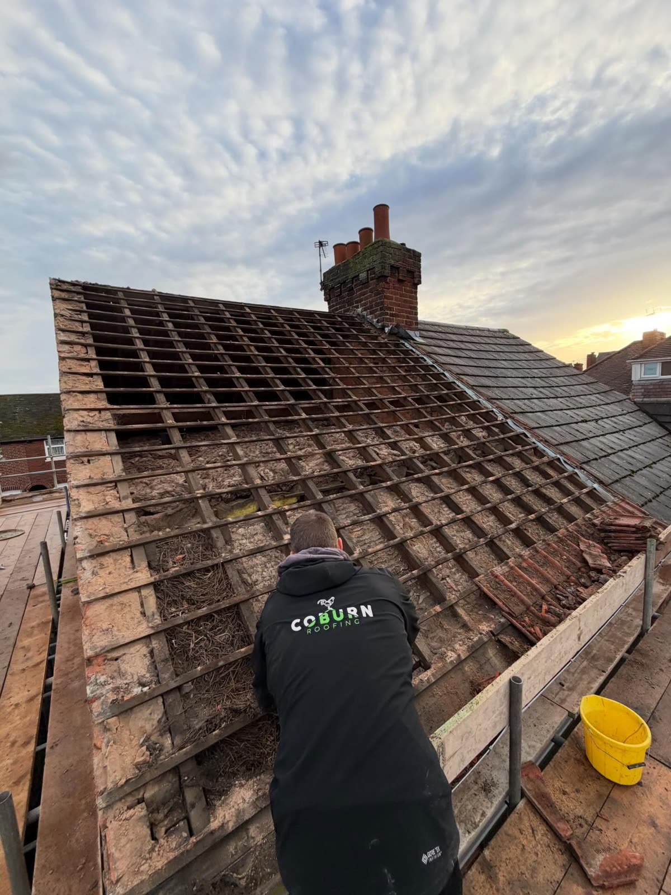
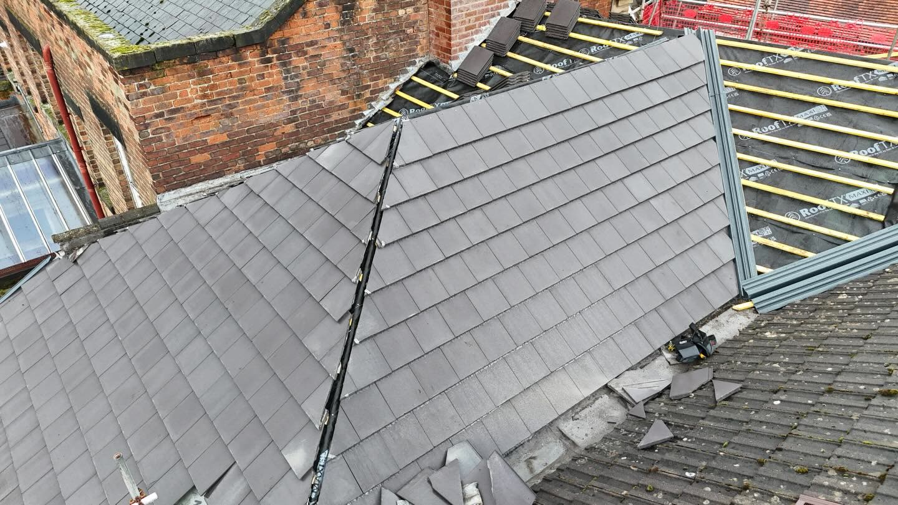

About us
About Coburn Roofing
A father and son roofing business based in Strelley, Nottingham, working across Nottinghamshire, Derbyshire and Leicestershire.
A father and son roofing business based in Strelley, Nottingham, working across Nottinghamshire, Derbyshire and Leicestershire.


Coburn Roofing is a small family business, established in 1981. It’s a father and son team: Steve has 41 years of roofing behind him, and his son Zak Coburn, who runs the business today, has 15.
There are 3 of us. Most of the work is repairs: re-bedding and repointing ridge tiles, replacing broken tiles, repairing and renewing flat roofs, GRP fibreglass, repointing chimney stacks, guttering, downpipes, fascias and soffits. Full re-roofs too, when a roof is past repairing.
We’re based in Strelley on the west side of Nottingham, which puts Derby, Ilkeston and the Erewash valley as close as the city. See the areas we cover.
From the family and from their customers.

Hidden faults get found from the air first. Two customers mention it: Alison Ball’s mum’s flat roofs and ridge, and Catherine Beswick’s leak that other roofers had charged for and not fixed.
You see what was wrong and what was done, without climbing up. Matt N, Kirsten Wood and Catherine Beswick all mention the photos in their reviews.
Steve has 41 years in roofing and Zak 15. The person who quotes is one of the people who does the job.
Ridge tiles, slipped tiles, leaks and flat roofs are the bulk of the work. See roof repairs and flat roofing.
Toby Beck’s review on Facebook calls the team “polite, tidy”, and Matt N’s on Google says Zak was “professional and friendly”.
Word for word from Google and Facebook.
Call, WhatsApp or message Coburn Roofing for honest advice and a free, no-obligation quote.